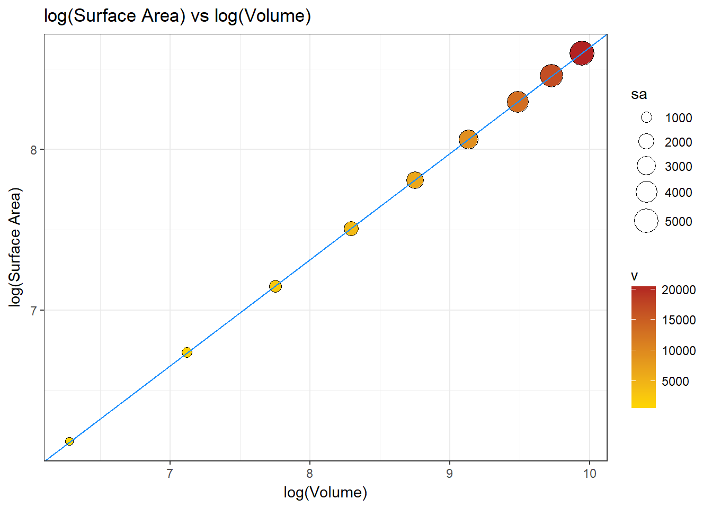
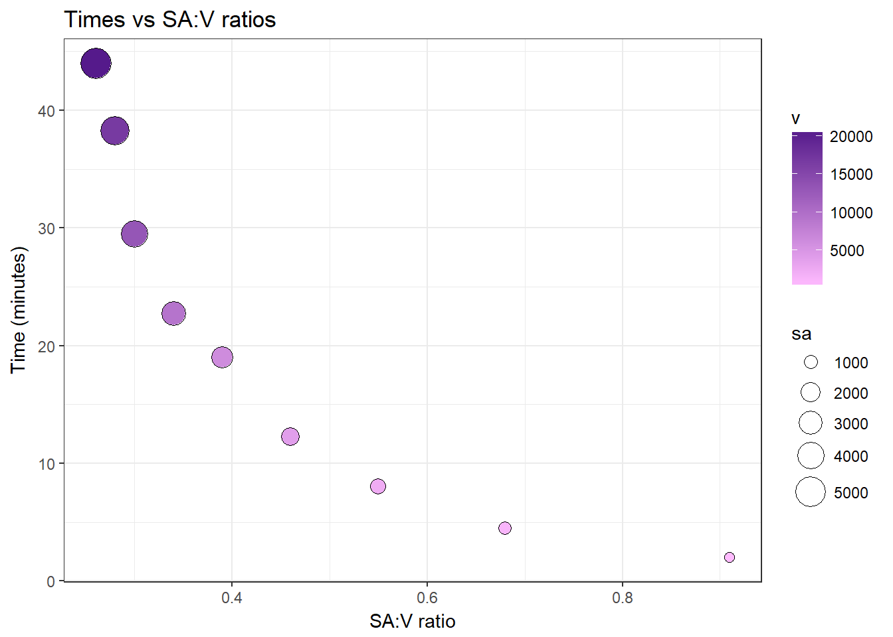

# Plot the results of the body diffusion observations
# Replace existing data points with your own!
#try out ggplot2 library for graphing
library(ggplot2)
#Enter caterpillar dimensions (mm)
diameters <-c(4.76,6.35,7.94,9.53,11.11,12.70,14.29,15.48,16.67) #in mm, from Humboldt Mfg. spec sheet
lengths <-c(30,39,47,56,65,73,82,89,95)
#Enter diffusion times (minutes)
times <-c(2,4.5,8,12.25,19,22.75,29.5,38.25,44)
#==============================
#the code below is ready to go!
#==============================
#calculate radii (mm)
r = diameters/2
#calculate surface areas (mm^2) for cylinders
sa = (2*pi*(r^2)) + (2*pi*r*lengths)
#calculate volumes (mm^3) for cylinders
v = pi*(r^2)*lengths
#calculate surface area to volume ratios
ratios = sa/v
#round these so they fit in a data frame table
sa = round(sa, digits=0)
v = round(v, digits=0)
ratios = round(ratios, digits=2)
#print out organized data as a data frame
df<-data.frame(r,lengths,sa,v,ratios,times)
df## r lengths sa v ratios times
## 1 2.380 30 484 534 0.91 2.00
## 2 3.175 39 841 1235 0.68 4.50
## 3 3.970 47 1271 2327 0.55 8.00
## 4 4.765 56 1819 3995 0.46 12.25
## 5 5.555 65 2463 6301 0.39 19.00
## 6 6.350 73 3166 9247 0.34 22.75
## 7 7.145 82 4002 13151 0.30 29.50
## 8 7.740 89 4705 16750 0.28 38.25
## 9 8.335 95 5412 20734 0.26 44.00#let's find the mathematical model that describes the relationship between our log-transformed surface areas and our log-transformed volumes
myModel = lm(log(sa)~log(v))
#let's extract the slope and intercept specifically so we can use them to draw a line of best fit
myIntercept = myModel$coefficients[1]
mySlope = myModel$coefficients[2]
#ggplot version for surface area to volume (with log transformations)
#add in the line of best fit using our mathematical model calculations and change the color of the line to stand out
#scale and color the points to correspond to the data for surface area and volume, respectively
savPlot <- ggplot(df, aes(x = log(v), y = log(sa), size = sa, fill = v)) + geom_point(shape = 21)+ ggtitle("log(Surface Area) vs log(Volume)") + labs(x = "log(Volume)", y = "log(Surface Area)")+ scale_fill_continuous(low = "gold", high = "firebrick") + scale_size_area(max_size = 8)+ theme_bw() + theme(legend.position = "right", legend.direction = "vertical")+ geom_abline(intercept = myIntercept, slope = mySlope, col="dodgerblue")
savPlot
#find relationship of sa to v in log terms
#we can interpret slope as the percent change in y for a 1 percent change in x
#cat("*** A 1 % increase in surface area results in a ", round(mySlope, digits=2), "% increase in volume", "\n")
#ggplot version of the scatterplot with points scaled and filled using data values
#set up the plot using data from the data frame. Specify the values for x,y,point size, and fill
#change title, labels, color scale limits, point size, theme, legend position
#omit "+ theme_bw()" for default grey background
# looks like y = a*x^b (?)
ratioTimePlot <- ggplot(df, aes(x = ratios, y = times, size = sa, fill = v)) + geom_point(shape = 21) + ggtitle("Times vs SA:V ratios") + labs(x = "SA:V ratio", y = "Time (minutes)") + scale_fill_continuous(low = "plum1", high = "purple4") + scale_size_area(max_size = 8) + theme_bw() + theme(legend.position = "right", legend.direction = "vertical")
#try adding this to the end of the other commands (you can change the formula to try for a better fit):
#+ stat_smooth(method = "nls", formula = "y ~ a*x^b", start = list(a = 1, b = 1), se = FALSE)
#draw the plot
ratioTimePlot